Сеноте біля Канкуна, Плайї та Тулума
Відкриті та печерні сеноте за базами, плюс ціни, правило санскрину, що взяти і як уникнути денних натовпів.

Гіди та добірки для подорожей
У цьому розділі зібрані основні практичні матеріали Travel Radar LK: розбори районів, добірки готелів, пояснення щодо перельотів і гіди по напрямках, які допомагають планувати подорожі з меншою кількістю сліпих зон і дорогих помилок.
Найновіші матеріали зараз зосереджені на Мексиці. Гіди по Єгипту і Туреччині залишаються нижче як додаткові живі розділи поруч із темами готелів, перельотів і практичного планування.
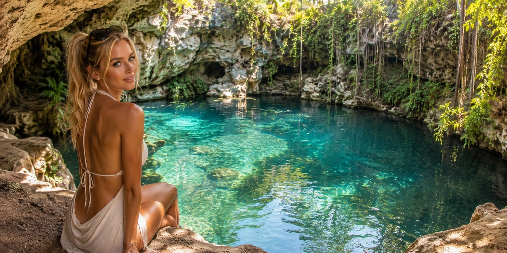
Відкриті та печерні сеноте за базами, плюс ціни, правило санскрину, що взяти і як уникнути денних натовпів.
Скільки насправді триває дорога, тур проти оренди авто й автобуса, у скільки обходиться та кому чесно варто пропустити Чічен-Іцу в короткій відпустці.
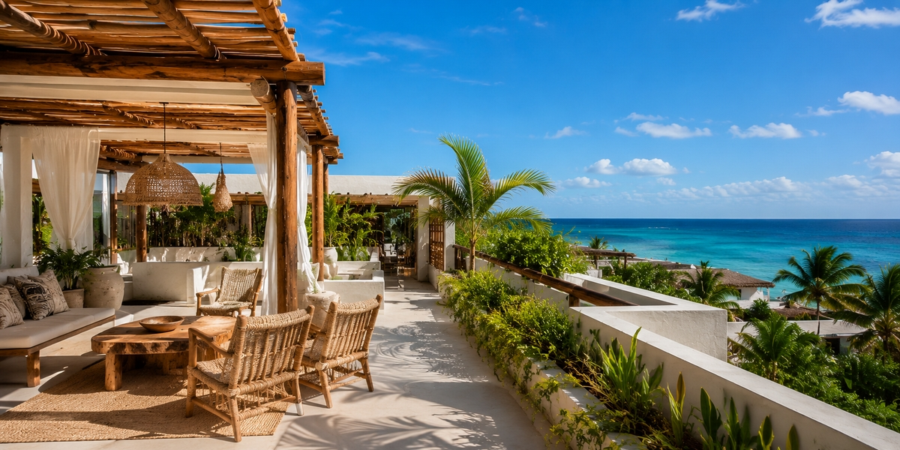
Обирайте готелі Tulum за Beach Zone, Town, La Veleta або Aldea Zama з урахуванням AC, саргасуму, таксі і категорії номера.
Обирайте готелі Playa за районом, доступом до пляжу, шумом, форматом відпочинку, пішою доступністю і ризиками першого бронювання.
Обирайте за зонами: Коста-Мухерес, Плайя-Мухерес, Пуерто-Морелос, Майякоба і Марома — з урахуванням пляжу, трансферу і ризиків бронювання.
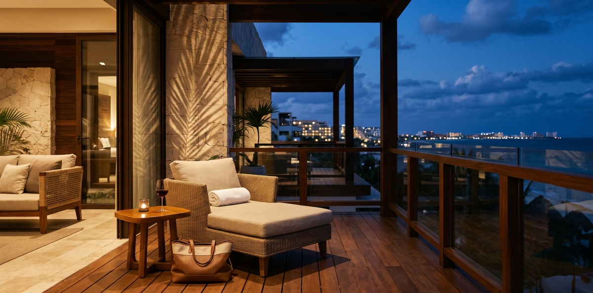
Як вибрати adults-only курорт у Канкуні за тишею, романтикою, пляжем, їжею, локацією, nightlife і ризиками бронювання.
Як вибрати сімейний готель у Канкуні за пляжем, дитячим клубом, номером, харчуванням, трансфером і ризиками бронювання.
Як вибрати правильний район Hotel Zone для all-inclusive у Канкуні за пляжем, атмосферою, сім'ями, парами і ризиками бронювання.
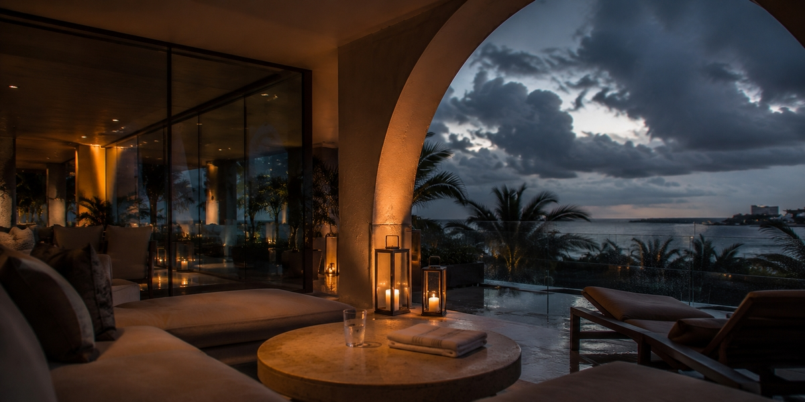
Безпечні місяці, пік ризику, страхування, скасування броні й гнучке планування поїздки до Канкуна в сезон ураганів.
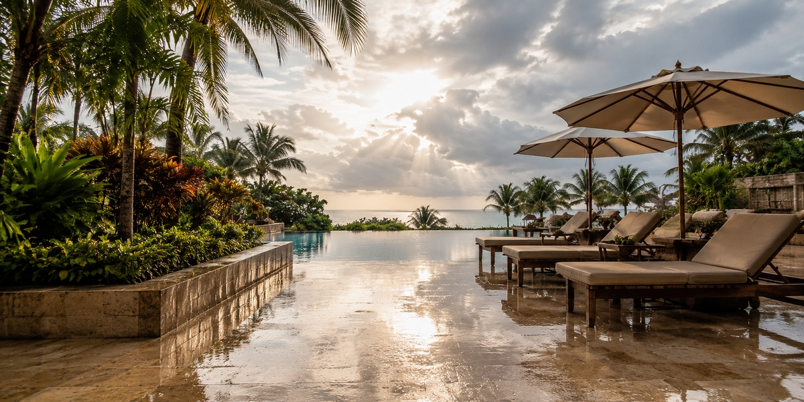
Як вирішити, чи варто бронювати Канкун у сезон дощів: погода, штормовий ризик, пляжі, готель і гнучкість поїздки.
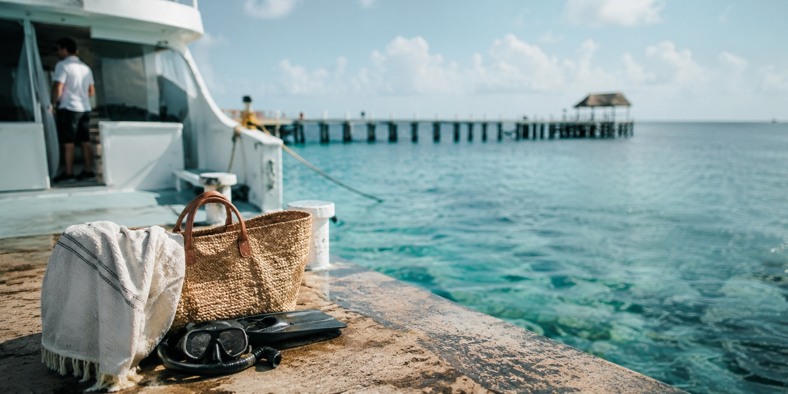
Як спланувати день на Cozumel із Playa del Carmen: пором, пляжі, снорклінг, запас часу на повернення й типові помилки.
Порівняйте Cancun, Isla Mujeres, Cozumel і сусідні рифи за якістю снорклінгу, зручністю для новачків, погодними ризиками, турами й логістикою.
Порівняйте Isla Mujeres, Chichen Itza, сеноти, Xcaret, Tulum, Cozumel і Holbox за часом у дорозі, складністю, ризиком бронювання й тим, кому підходить кожна поїздка.

Практичний гід по песо, доларах, картках, банкоматах, чайових і помилках з оплатою в Канкуні, Плая-дель-Кармен, Тулумі та Рив’єрі-Мая.
Практичний гід для пари: як вибрати район Канкуна, формат resort, пляж, рівень nightlife і ритм бронювання до оплати.
Практичний сімейний гід по Канкуну: де зупинитися, що перевірити перед бронюванням, трансфер, пляжі, паузи й типові помилки.
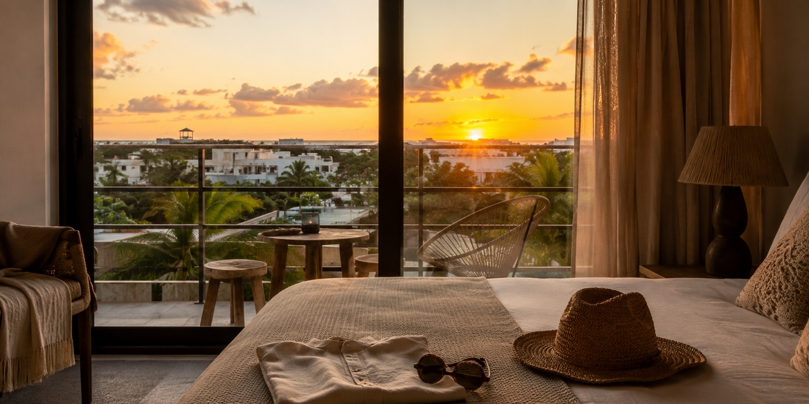
Практичне порівняння Канкуна, Плая-дель-Кармен і Тулума за готелями, їжею, транспортом, пляжними витратами та стилем поїздки.
Практичний гід для вибору між пляжною зоною, Downtown, П'ятою авенією і Playacar до бронювання.
Практичний гід по Плая-дель-Кармен: де зупинитися, пляжі, П'ята авеню, пором на Косумель, поїздки на день, безпека й часті помилки.
Що перевірити до бронювання готелю в Канкуні: пляж, район, підсумкову ціну, відгуки, формат resort, трансфер і умови скасування.
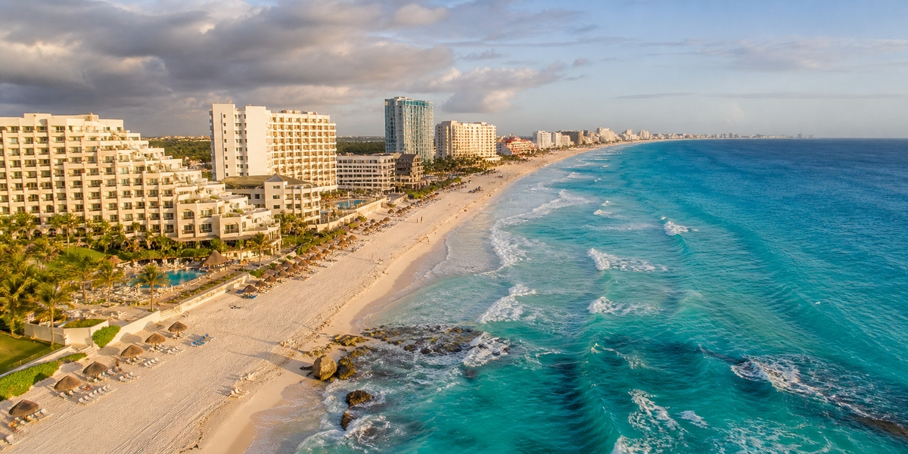
Практичний гід для вибору пляжної зони Канкуна: спокійна вода, хвилі, саргасум, сімейне купання й що перевірити до бронювання готелю.

Практична карта Канкуна, Плая-дель-Кармен, Тулума, Пуерто-Морелоса, Акумаля і resort-зон перед вибором, де зупинитися.
Практичний гід для вибору adults-only, сімейного або гібридного курорту в Канкуні: атмосфера, басейни, ресторани, шум, зручності й формат поїздки.
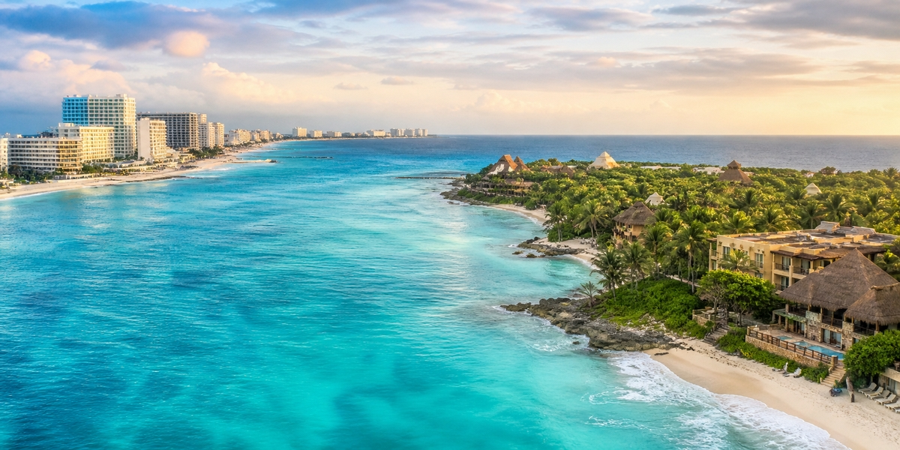
Практичний гід для вибору зони all-inclusive: пляж, трансфер, формат курорту, екскурсії, сім'ї, пари й ризики бронювання.
Практичний гід по готелях all-inclusive в Канкуні: коли формат виправдовує себе, коли ні, що входить у пакет і що перевірити до бронювання.

Практичний чеклист перед бронюванням готелю в Канкуні: район, пляж, номер, відгуки, збори, формат готелю й умови скасування.
Практичний гід по першій годині після посадки в аеропорту Канкуна: паспортний контроль, отримання багажу, митниця, вихід із термінала і як не переплатити на старті.
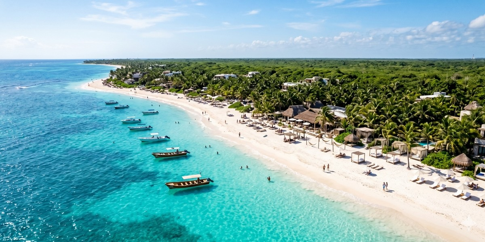
Практичний гід по public beaches у Tulum: як працює доступ, що коштує грошей і який пляж вибрати під ваш день.
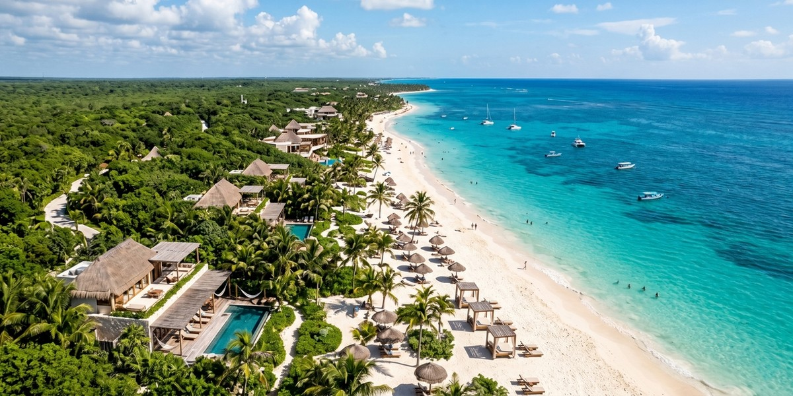
Реальний бюджет Tulum на 2026 рік: Town vs Beach Zone, приховані щоденні витрати і кому Tulum справді вартий своїх грошей.
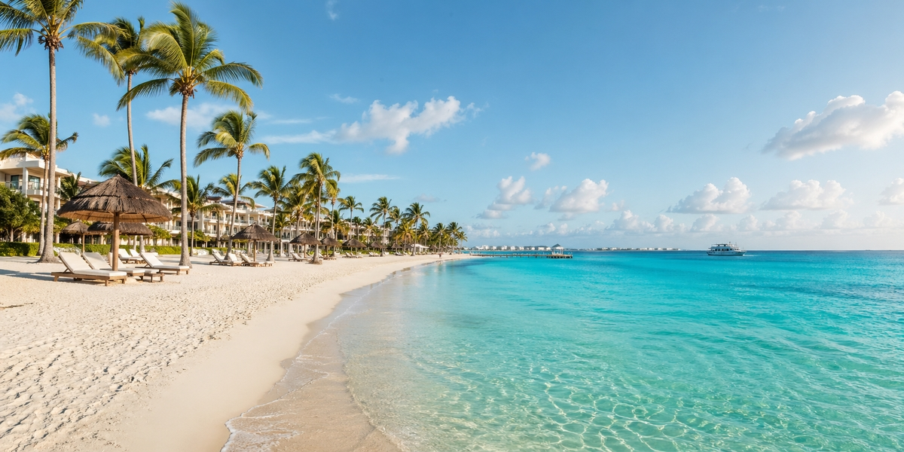
Практичне порівняння Пунта-Кани й Канкуна за форматом резорту, пляжним відчуттям, гнучкістю поїздки та тим, який напрямок краще підходить саме вам.
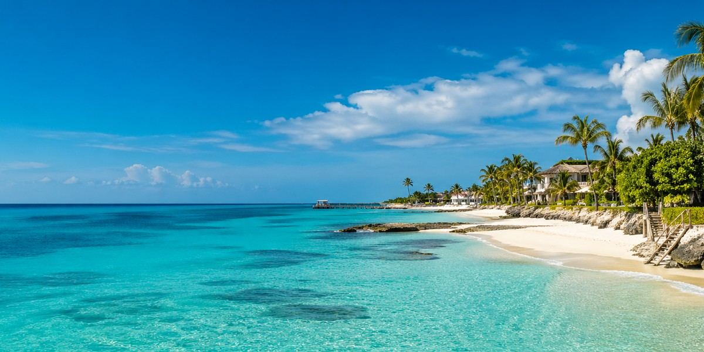
Практичний гід по вибору між Козумелем і Isla Mujeres: пляжі, вода, рифи, логістика і те, кому який острів підходить краще.
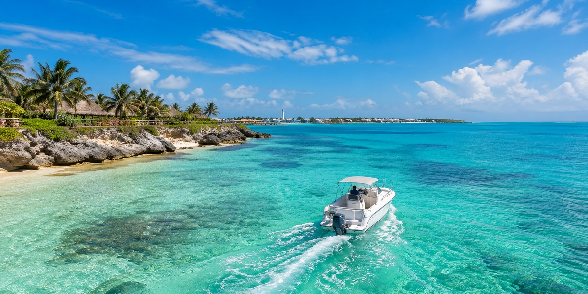
Практичний гід по поїздці на Isla Mujeres з Канкуна: термінали порома, Playa Norte, самостійно чи туром, і помилки, які псують день.
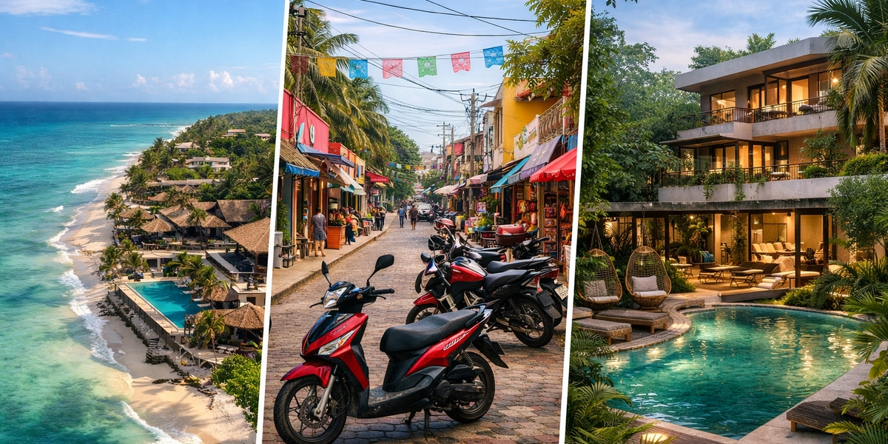
Практичний розбір районів Tulum: що ближче до пляжу, де дешевше, де спокійніше і як не переплатити за неправильну локацію.
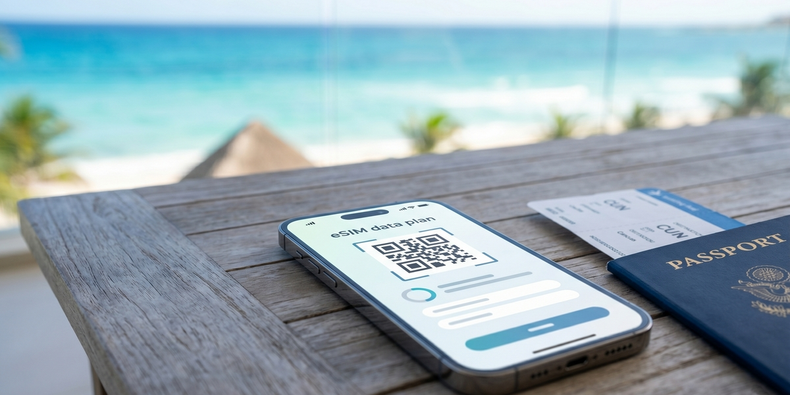
Як залишатися на зв'язку в Мексиці без зайвих витрат: що зробити до рейсу, чого уникати і який тип eSIM підійде під ваш формат поїздки.

Практичний розбір сімейної безпеки в Cancun: де зазвичай спокійніше, що перевірити до бронювання і які помилки створюють зайвий стрес.

Чесний сезонний гід по Cancun і Riviera Maya: коли їхати заради кращої погоди, чистішого моря, нижчих цін і спокійнішої поїздки.
Практичний розбір трансферів із Cancun Airport: що бронювати, де мандрівники переплачують і який варіант краще підходить вашому сценарію.

Реальний бюджет Cancun: переліт, готелі, їжа, транспорт і приховані витрати без дорогих сюрпризів.
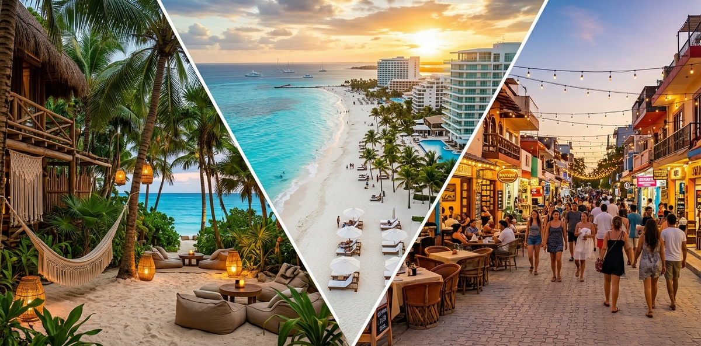
Чесне порівняння трьох курортів Мексики, щоб вибрати правильно і не шкодувати після бронювання.
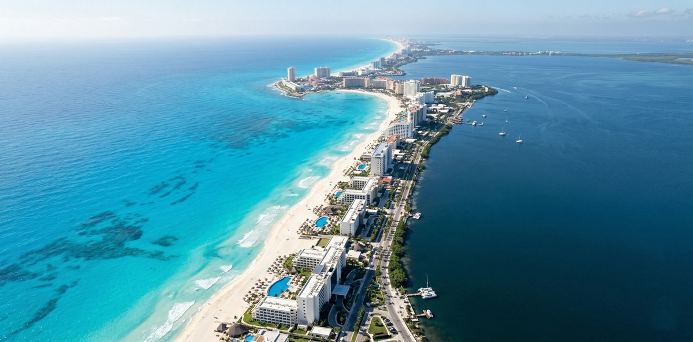
Де зупинитися в Cancun: найкращі райони і готелі в Hotel Zone, щоб вибрати правильну локацію.
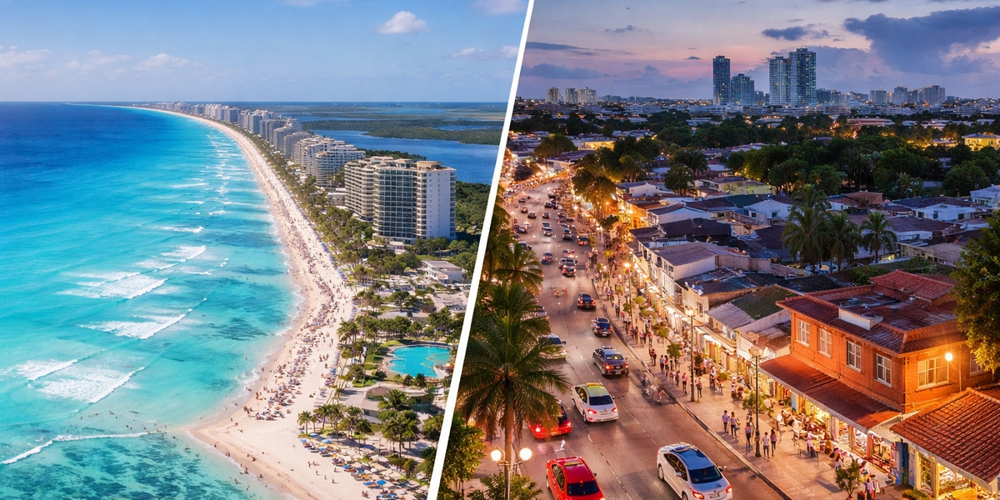
Практичний гід по районах Cancun: пляжі, бюджет, транспорт, безпека і кому краще жити в Hotel Zone або Downtown.
Практичний розбір районів Стамбула: Sultanahmet, Taksim, Beyoglu і Kadikoy за транспортом, атмосферою і стилем поїздки.
Райони, ціни і готельні орієнтири в Стамбулі без переплат і щоденної транспортної втоми.

Практичний чек-лист до оплати: реальні фото гостей, розмір номера, локація, приховані збори і ризики, які часто видно ще до бронювання.

Чому високий рейтинг готелю не гарантує хороший відпочинок і як вибрати готель, який справді підходить саме вам.
Нові правила в'їзду, електронні візи і зміни в роботі аеропортів Єгипту у 2026 році.
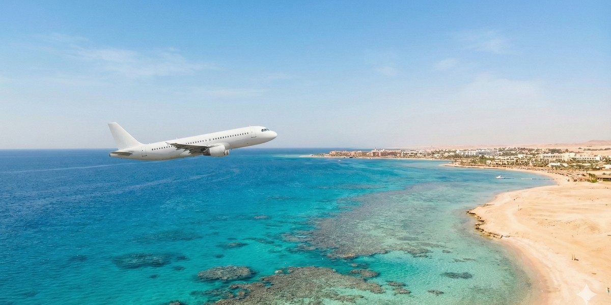
Які рейси літають до Єгипту, чим чартери відрізняються від регулярних і в які аеропорти прилітають туристи.
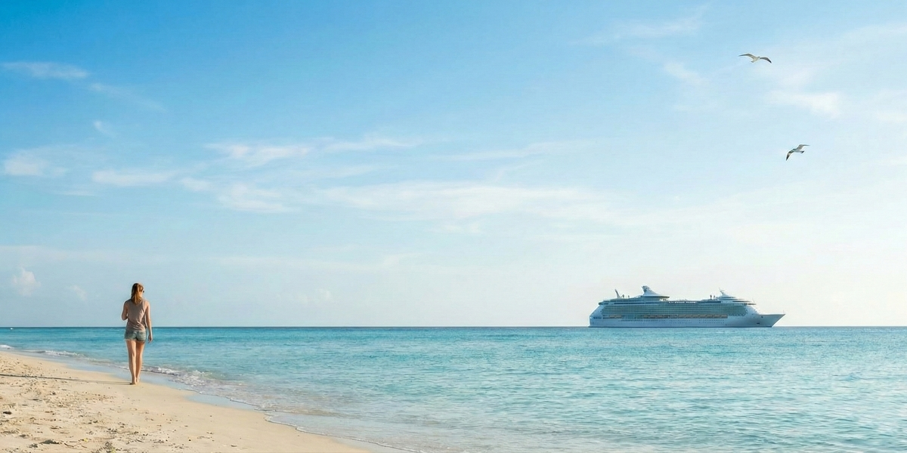
Мексика, Азія та Кариби через рейси, приховані витрати, трансфери й реальний комфорт подорожі.

Найпоширеніші схеми обману туристів у Єгипті та прості способи не потрапити в неприємну ситуацію.